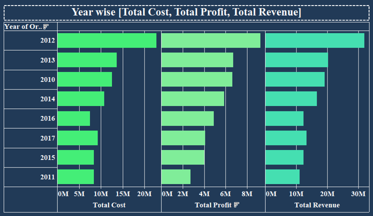

Analyzing Amazon Sales Data
Project Overview
This project, titled "Analyzing Amazon Sales data," involved a deep dive into Amazon's sales data to uncover key performance indicators (KPIs), identify trends, and discover opportunities to optimize profitability across various product types, regions, and countries. Sales management is a crucial function in commercial enterprises today, essential for meeting increased competition and improving distribution methods to reduce costs and boost profits. The project aimed to provide actionable insights for sales management to develop a clear strategy for sustained growth. This data analytics project falls under the "E-commerce" domain and is classified as "Advanced" in difficulty.
Tools Used: Tableau
My Role: Data Analyst
Objective
The core business problem addressed by this project is the need for effective sales management to navigate increasing competition and improve distribution methods, ultimately aiming to reduce costs and increase profits.
The primary objectives of this analysis were to:
- Perform ETL on an Amazon dataset.
- Identify sales trends (month-wise, year-wise, yearly-month-wise).
- Find key metrics and factors related to sales performance.
- Show meaningful relationships between attributes in the dataset.
- Uncover opportunities to optimize profitability across product types, regions, and countries.
- Explore total costs per sale and country-specific profit margins.
- Develop a clear strategy to drive sustained growth.
Dataset Description
The analysis was performed on an Amazon sales dataset. The dataset is accessible via a provided link for download. The specific features and granularity of the dataset are inferred from the analysis objectives, including information necessary to determine:
- Sales trends over time (years and months).
- Costs and profits at an item level and country level.
- Data by item type (e.g., Cosmetics, Household, Office Supplies, Baby Food, etc.).
- Regional and country-wise profit distribution.
- Total units sold, total cost, total items, total amount, average total revenue, and average total profit.
Step-by-Step Approach Taken
- Data Acquisition: The Amazon sales dataset was obtained from the provided link.
- ETL (Extract, Transform, Load) (Python):
o Extract: Retrieving raw sales data from the source.
o Transform: Cleaning the data, handling missing values, standardizing formats, and possibly creating new features or aggregating data for analysis. This includes preparing data to analyze sales trends month-wise, year-wise, and yearly-month-wise.
o Load: Loading the processed data into a format suitable for visualization tools like Tableau. - KPI Definition and Calculation:
o Calculated Revenue Growth
o Determined Profit Margins
o Analyzed Customer Acquisition
o Calculated Inventory Turnover - Exploratory Data Analysis (EDA): Identify distributions, trends, and outliers.
- Dashboard Design & Visualization (Tableau):
- Year-wise total cost, total profit, and total revenue (Image 2)
- Item type total cost and total profit (Image 3)
- Item-wise profit (Image 4)
- Region-wise profit (Image 5)
- Country-wise profit map (Image 6)
- Total cost of items per sales channel (Image 7)
- Insight Generation & Recommendations: Final interpretations and strategic suggestions.
Key Metrics Tracked
- Revenue Growth
- Profit Margins
- Customer Acquisition
- Inventory Turnover
- Total Units Sold
- Total Cost
- Total Items
- Total Amount
- Average Total Revenue
- Average Total Profit
- Sales Trends
- Regional and Country-wise Profit
- Item Type Profitability
- Cost Per Sales Channel
Chart Descriptions
Overall Sales Metrics (KPI Cards): Displays key aggregated figures such as AVG Unit Sold , AVG Total Cost, Total Item, Total Amount, AVG Total Revenue, and AVG Total Profit.

Year-wise Total Cost, Total Profit, Total Revenue: A stacked or grouped bar chart showing the breakdown of total cost, total profit, and total revenue for each year, allowing for easy comparison of financial performance over time.
Item Type Total Cost & Total Profit: This chart visualizes the total cost and total profit for each item type (e.g., Baby Food, Beverages, Cereal, Clothes, Cosmetics, Fruits, Household, Meat, Office Supplies, Personal Care, Snacks, Vegetables). This helps identify the profitability of different product categories.
Item Wise Profit: A line chart illustrating the profit generated by each individual item type. This provides a clear view of the most and least profitable items.
Region Wise Profit : A pie chart showing the distribution of profit across different regions, such as Sub-Saharan Africa, Asia, Australia and Oceania, Central America and the Caribbean, Europe, Middle East and North Africa, and North America. This immediately highlights top-contributing regions .
Country wise Profit: A world map showing profit distribution by country, allowing for visual identification of strong and weak markets geographically.
Total Cost per Sales Channel: Compares the total cost of items sold through 'Offline' versus 'Online' sales channels. This provides insights into channel efficiency and cost structures.

Insights and Final Recommendations
- Healthy average profit and revenue trends
- High-growth regions: Sub-Saharan Africa, Europe, Asia
- High-profit item types: Cosmetics, Household, Office Supplies
- Channel comparison for cost-effectiveness
Summary Table
| Project Title | Analyzing Amazon Sales Data |
| Technologies Used | Python, Tableau |
| My Role | Data Analyst |
| Business Problem | Sales optimization amidst competition and distribution challenges |
| Objective | Analyze trends, metrics, relationships, and optimize sales |
| Dataset(s) | Amazon Sales Dataset |
| Key Metrics | Revenue, Profit, Trends, Customer, Cost |
| Approach | ETL + Tableau Dashboards |
| Insights | Profit drivers by region/item/channel |
| Recommendations | Improve strategy for sustainable growth |
| Learning Outcomes | ETL, KPI analysis, dashboard storytelling |
⬅ Back to Portfolio